The project aims to investigate various algorithms for decomposing a simple polygon into its convex subcomponents. Five different algorithms are explored, accompanied by an examination of their overall strategies. Two approach involve avoiding the addition of extra points, commonly referred to as Steiner points. The two algorithms that are discussed here within this paradigm are simple triangulation and greedy decomposition. Another strategy permits the addition of extra points to ease the decomposition process. For this, the Chazelle algorithm, slab decomposition, and KD decomposition are going to be implemented and discussed.
To demonstrate an example of an application of the different decompositions, a Minkowski sums algorithm will be implemented. The initial phase of this algorithm involves decomposing the polygons, with which the sum will be calculated. Reducing the number of decomposition components here will generally result in better performance.
Now, a more thorough description of the application's various components and implemented algorithms will be presented.
Prior to initiating the implementation of any decomposition algorithm, we have to determine the most suitable representation for polygons and their decompositions. In the description of the triangulation algorithm, a recommended structure is proposed: a doubly connected edge list. After some research, it seems that it is the best choice for our application. It accommodates complex arrangements of edges, vertices and faces that can represent a decomposed polygon. Furthermore, you can easily add new edges or vertices. Finally, the structure allows for efficient iteration over faces, facilitating the extraction of generated convex shapes by traversing their borders.
We chose to implement our own DCEL class to enhance our understanding of its workings. It is composed of three classes: DCFace, DCHalfEdge and DCVertex, corresponding to the fundamental components of the DCEL. The DCEL class features two main methods:
Our implementation of triangulation relies on the line-sweep algorithms covered in the course. The first part involves partitioning a simple polygon into multiple Y-monotone polygons by adding carefully chosen edges. At the end of this stage, the boundary of each face in the DCEL is a y-monotone polygon. Here is an illustrative example from our application at this stage:

Then the second part is splitting these polygons into triangles by using another line sweep algorithm with a stack. The result for the same polygon looks like this:

For our test examples, the result is the following:
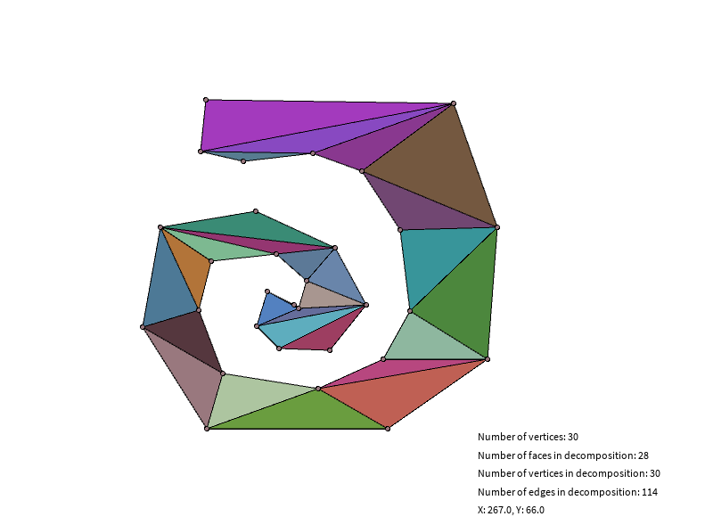 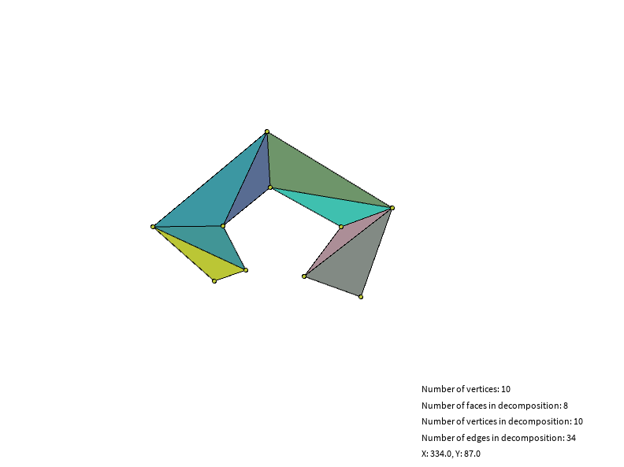 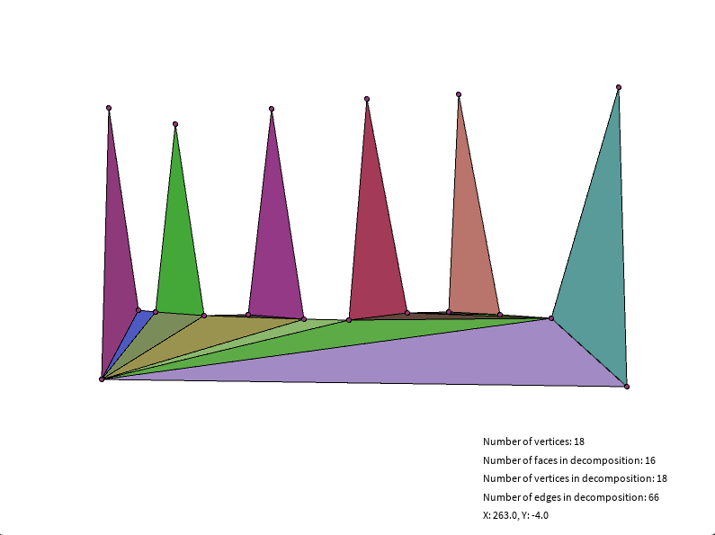This decomposition leverages the triangulation algorithm but halts as soon as there are no more reflex vertices in the polygon. It is implemented by introducing a greedy boolean variable as an argument of the triangulation methods and a reflexVertices list in DCEL.Upon the addition of each edge, the reflex vertices are updated. If the list becomes empty, the program checks whether the greedy mode is activated, and if so, it returns. The process may halt in the monotone decomposition or in any of the triangulations. Nevertheless, when a reflex vertex is positioned at the bottom of the decomposed polygon, the result is the same as the regular triangulation.
For our test examples, the result is the following:
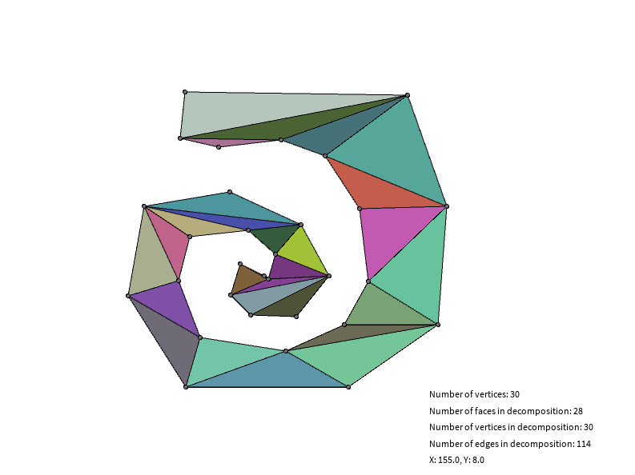 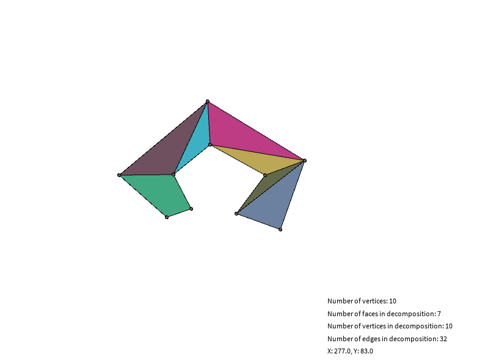 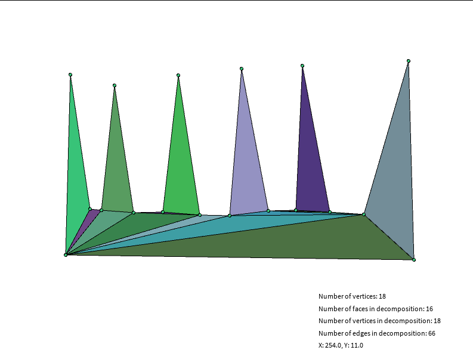
The slab decomposition algorithm is described in
The way this algorithm is implemented is by taking a polygon, categorizing all vertices of this simple polygon into the following categories: start, end, split, join, reflex point and other points. This information is then used in a sweep line algorithm that travels perpendicular to the initial direction over the field with the vertices as its events. This is done to maintain a list of edges above and below a certain point, so only a limited amount of edges need to be tested for intersection. Once an edge above or below a reflex point has been found, a cut will be made along the initially chosen direction.
For this algorithm, all events are used to update the sweep line structure, and maintain an ordered list of all edges currently intersecting with the sweep line. The vertices considered reflex points are the vertices that are classified as either a split, a join or a reflex point.
For a time complexity analysis, categorizing all points and adding them to an event queue results in O(n log n). As we need to iterate through all points and then put them into a priority queue. Insertion of a cut is O(E) with E the number of edges of the part of the polygon that has not been cut. The final time complexity of this algorithm is then O(E n + p) with E the number of edges in the polygon and n the number of events that represent reflex points and p the number of events that do not represent reflex points.
 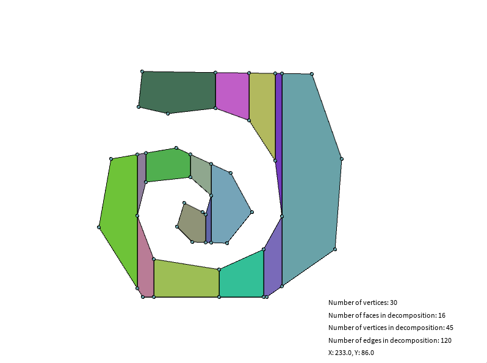
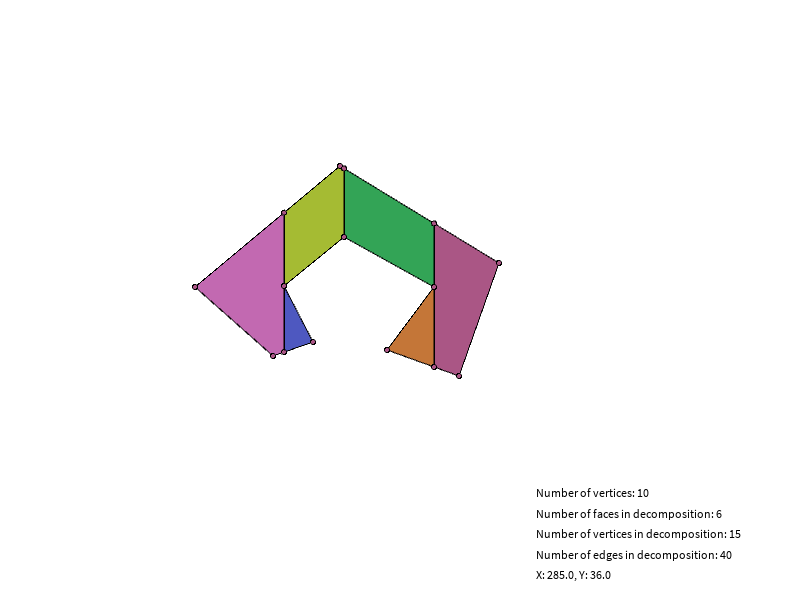
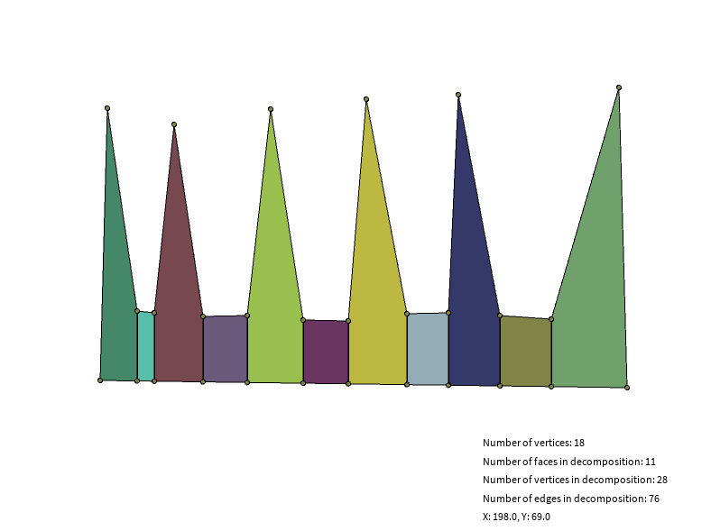
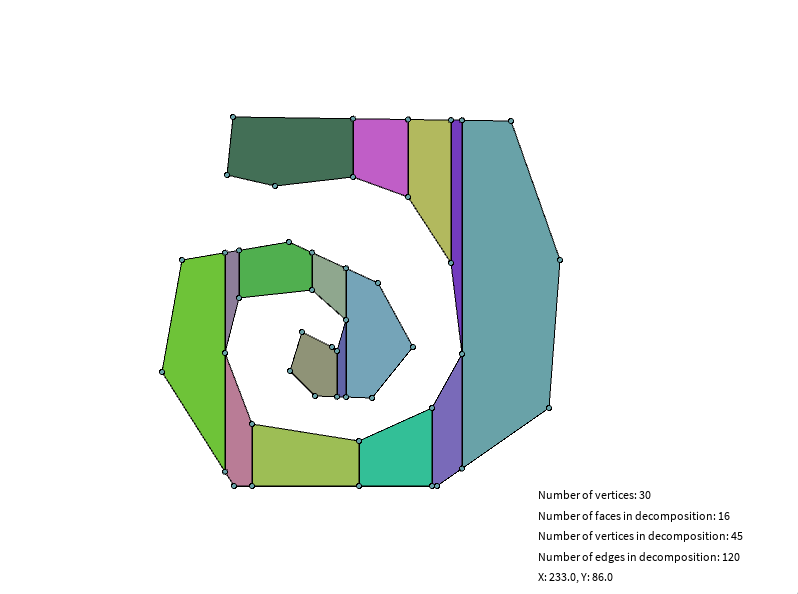
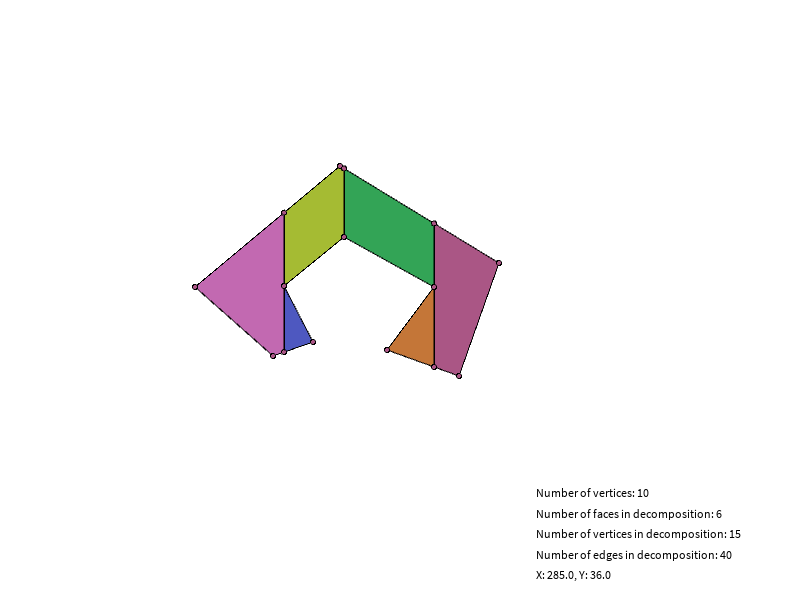
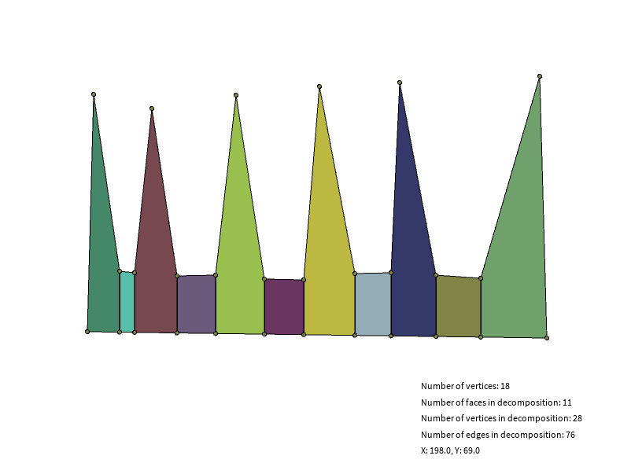
The KD decomposition is described in
For the KD decomposition algorithm, this results in first finding all reflex points in the polygon and sorting them along the x- and y-axes. Every iteration, the median of the sorted reflex points is selected along the current axis. The polygon is then cut along this axis through the median point. The resulting pieces after the cut are then handled recursively until no more reflex points can be found while alternating the selected axis.
A invariant that needs to be taken into account, is that once a reflex point has been used for a cut, it is not reused for a cut along another axis.
For the time complexity analysis of this algorithm: Finding all the reflex points is O(n) and sorting them along all the axis's is O(n log(n)). For the meat of the algorithm, first finding the median along an axis region is O(1) ((start + end) / 2). Finding one or possibly two opposite sides for making a cut, is done by iterating over all the edges of the faces adjacent to the current reflex point. If an edge intersects with the direction of the cut, is visible from inside the polygon by the current reflex point and is the closest intersection seen from the current reflex point, a cut is made from the current reflex point to the intersection with the line along the current axis through the current reflex point and the found edge. This cut can be made in O(E) with E the number of edges in the common face between the reflex point and the cut's destination. Finding the cut's destination is O(FE) with F the adjacent faces to the reflex point and E the number of edges in these adjacent faces. As it is not guaranteed that the cut evenly divides the polygon every time, resulting in having to search faces that do not really reduce in size with every cut. This leads to a worst case time complexity of n*O(n)=O(n^2). But when considering more favorable polygons where cutting, splits a face into two more equal parts, it can be said that the amortized time becomes O(n log n).
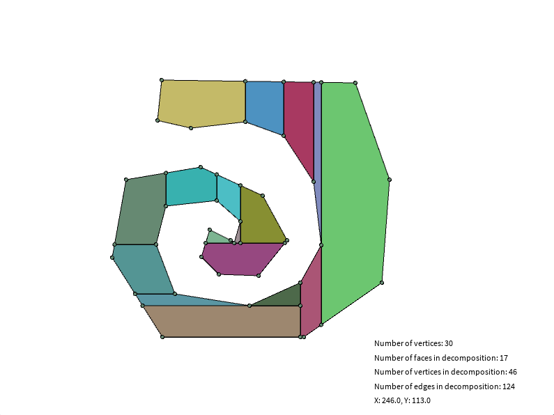 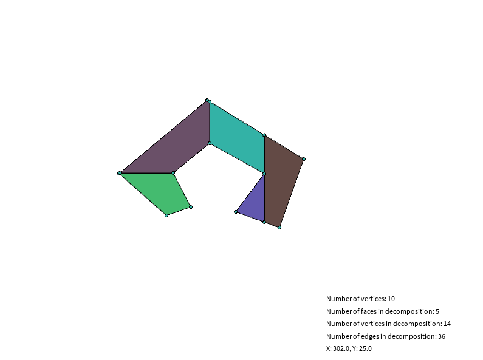 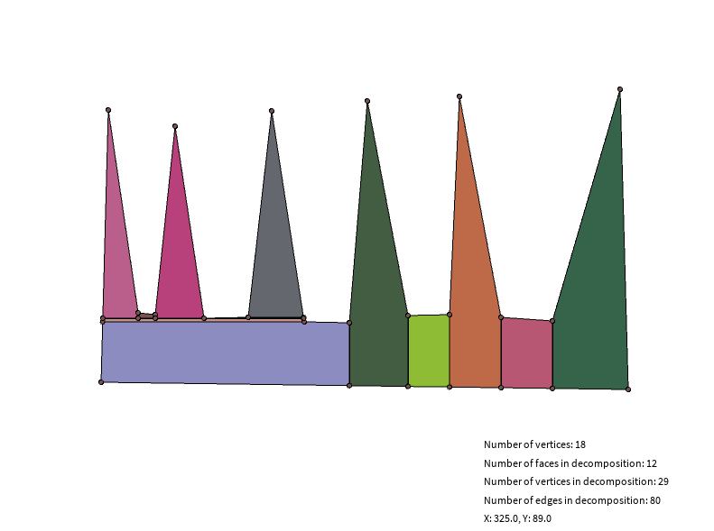
The Chazelle decomposition algorithm is described in
The notion of Xk-pattern is then introduced as an element interconnecting k notches, forming a set of k polygons and removing all reflex points occurring at those k notches. No new notch is introduced by the Xk-patterns. The final solution will then be made out of all the possible Xk-patterns found in the polygon.
Only the Xk-pattern and subsequent decompositions is considered in the paper, but it is important to note that Chazelle also identifies Yk-patterns. These Yk-patterns are derived from the Xk-patterns and used to further improve the final decomposition.
The vast majority of the work done in this part of the project involves the pre-processing step of the Chazelle algorithm. This step consists in identifying specific segments and points in the polygon, by grouping together 3 different notches of the polygon (named Vi, Vj, Vk in the paper). One can imagine these 3 points positioned in a triangle, where other notches can sit in between each pair of points. The pre-processing will then generate 2 segments between each points of (Vi, Vj, Vk) in a left and right manner. For each of these points, 2 segments, l' and r' (respectively left and right) are generated (following the specific procedure described in the paper). For each of these segments, their intersections are also computed, and their coordinates are registered as M-points. An additional sub-step requires to check whether the M-points and the associated l' and r' all sit inside the polygon. All these lines and intersections can be computed in O(N(P)) where N(P) denotes the number of notches in the polygon P.
All the previously computed l' and r' segments as well as M-points are used to try and identify specific patterns in the polygon. 2 specific Xk-patterns are considered in the code:
The final step of this part of the project is to split the polygon into its convex components using the computed patterns. Again, the original intent was to make use of the Yk-patterns, but a simple greedy procedure will be used instead as the amount of time required to implement the entirety of the paper was simply too much for me alone. The greedy procedure will start with all the X3-patterns first, as they have the potential to maximize the number of removed notches for a minimum of introduced sub-polygon. Every time a new X3-pattern is considered, the algorithm verifies that this specific X3-pattern (i.e. the 3 points involved) can be used to split the polygon. Every time the polygon is split into sub parts, any other X3-pattern might not be usable as their points might now be scattered among different sub-polygons. Finally, the X2-patterns are considered, following the same logic. Once all sub convex components have been computed, they are returned by the algorithm.
Here is an example of the result of the Chazelle decomposition, considering only X2 and X3-patterns:
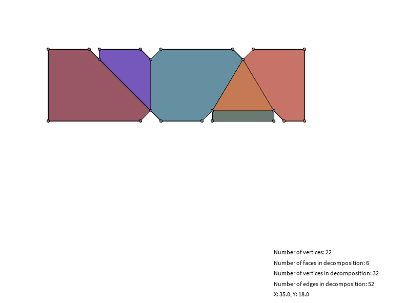
According to
Therefore, after choosing the decomposition algorithm, we have to compute the minkowski sum of two convex polygons. This article explains everything we need to know about this subject. They also provide this illustration:

When both polygon are convex, the edges of their Minkowki sum are the combined edges of both polygons, sorted by polar angles. Since in a convex polygon the edges are already sorted by polar angle, we can iterate simultaneously on both polygons edges and get the lower element at each iteration. To compare two edges we can use the orientation of (origin, edge1, edge1+edge2).
For educational purposes, the union of the Minkowski subsums where drawn individually with a transparent background. This allows the observer to see how the individual parts of a polygon have been modified by the summation, and shows visually the impact of the decomposition on the final result.
For the example, we took the slab decomposition of the saw pattern and calculated the Minkowski sum with a small circle.
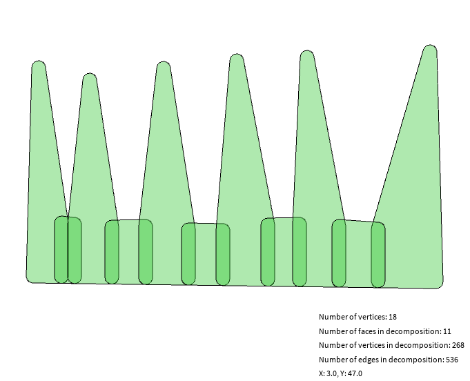 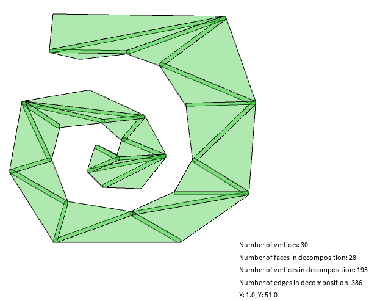The "tips" are rounded, and we can see overlaps in every edge added by the decomposition. This demonstrates why the Minkowski sum is used to find paths between obstacles for a moving robot. The area of the sum would be an area where a round robot would hit the obstacle. The second example is the Minkowski sum of the triangulation of a curved shape and a small square. We selected simple forms and decompositions because otherwise it becomes quite difficult to comprehend the result of the Minkowski sum.
The GUI is made with Processing in Java for the drawing and interactive parts and uses Swing for all other menus. It contains a custom layout engine to position the buttons dynamically in the menu and displays metrics about a certain decomposition.
For easy testing and experimenting, it is possible to save and reopen a polygon. Saving is done by storing the points of the polygon in a custom file format. Doing this allows to experiment with different types of polygons on an automated testing bed.
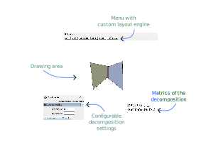| Decomposition | #vertices (before) | #vertices (decomposition) | #faces (decomposition) | #edges (decomposition) |
|---|---|---|---|---|
| Triangle | 30 | 30 | 28 | 114 |
| Greedy | 30 | 30 | 28 | 114 |
| Slab | 30 | 45 | 16 | 120 |
| KD | 30 | 46 | 17 | 124 |
| Decomposition | #vertices (before) | #vertices (decomposition) | #faces (decomposition) | #edges (decomposition) |
|---|---|---|---|---|
| Triangle | 10 | 10 | 8 | 34 |
| Greedy | 10 | 10 | 7 | 32 |
| Slab | 10 | 15 | 6 | 40 |
| KD | 10 | 14 | 5 | 36 |
| Decomposition | #vertices | #vertices (decomposition) | #faces (decomposition) | #edges (decomposition) |
|---|---|---|---|---|
| Triangle | 18 | 18 | 16 | 66 |
| Greedy | 18 | 18 | 16 | 66 |
| Slab | 18 | 28 | 11 | 76 |
| KD | 18 | 29 | 12 | 80 |